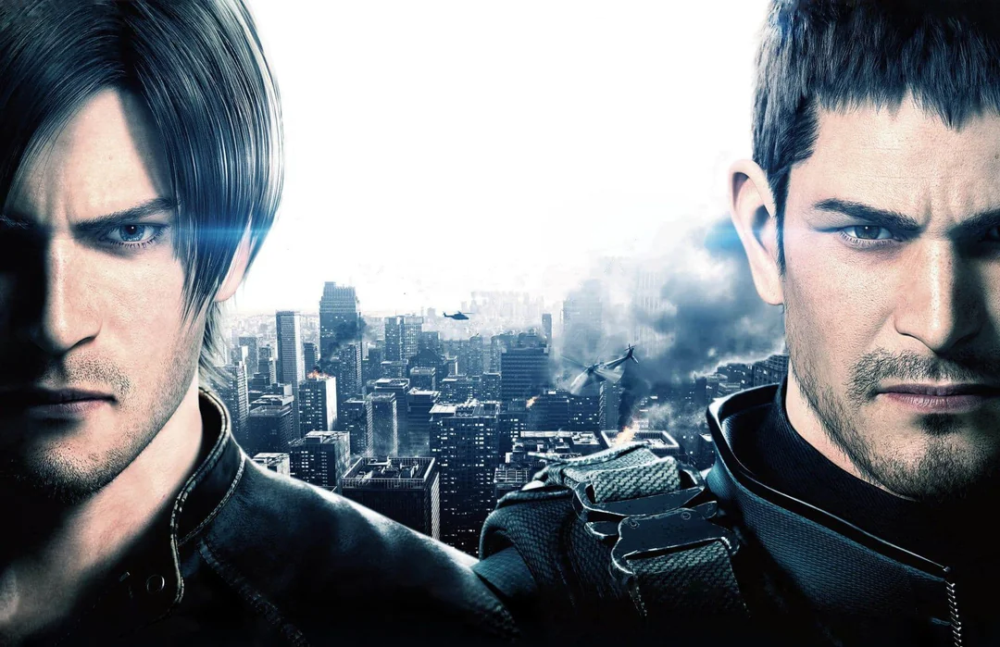
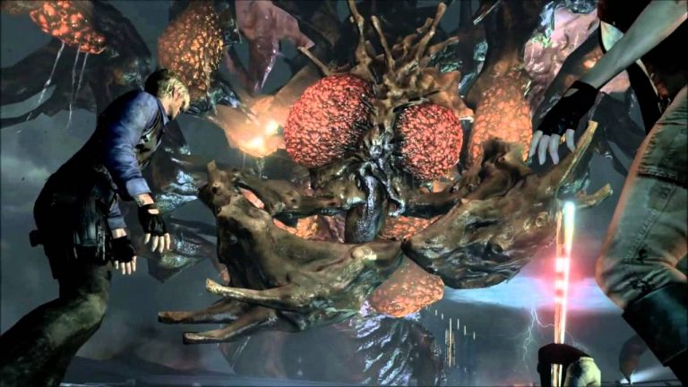

Visão geral

Resident Evil 6 é um dos títulos mais ambiciosos da série, com quatro campanhas principais entrelaçadas, envolvendo personagens como Leon S. Kennedy, Chris Redfield, Jake Muller e Ada Wong.
A ameaça da vez é o Vírus-C, utilizado em ataques bioterroristas em escala global.
Campanhas e estrutura
Cada campanha tem um tom diferente:
- Leon: mais próxima do terror clássico, com zumbis e clima sombrio;
- Chris: bastante focada em ação militar;
- Jake: mistura perseguições intensas e combate corpo a corpo;
- Ada: campanha secreta com foco em stealth e conspiração.
As histórias se cruzam em vários pontos, criando um grande mosaico narrativo de eventos simultâneos.
Gameplay
RE6 traz:
- Movimentos mais ágeis (roladas, deslizes, tiros em movimento);
- Combos corpo a corpo mais elaborados;
- Muitas cenas de ação explosiva e QTEs;
- Modo cooperativo em praticamente todas as campanhas.
Ao mesmo tempo, o excesso de ação e a duração longa foram pontos criticados por parte da comunidade.
Análise
Resident Evil 6 dividiu opiniões: para alguns, é um pacote completo de conteúdo, com muitas horas de jogo; para outros, é o ponto máximo do desvio da essência de terror da franquia.
Ainda assim, o jogo tem momentos marcantes, especialmente na campanha de Leon, e aprofundou bastante o universo do bioterrorismo na história.
Vendas aproximadas: cerca de 10 milhões de cópias.
Impacto: marcou o fim da era mais voltada para ação.
Curiosidades
- Foi um dos jogos mais caros da Capcom até então.
- Alguns fãs consideram a campanha de Leon a “mais Resident Evil” do pacote.
- Jake Muller é filho de Albert Wesker, vilão clássico da série.
Galeria de imagens


